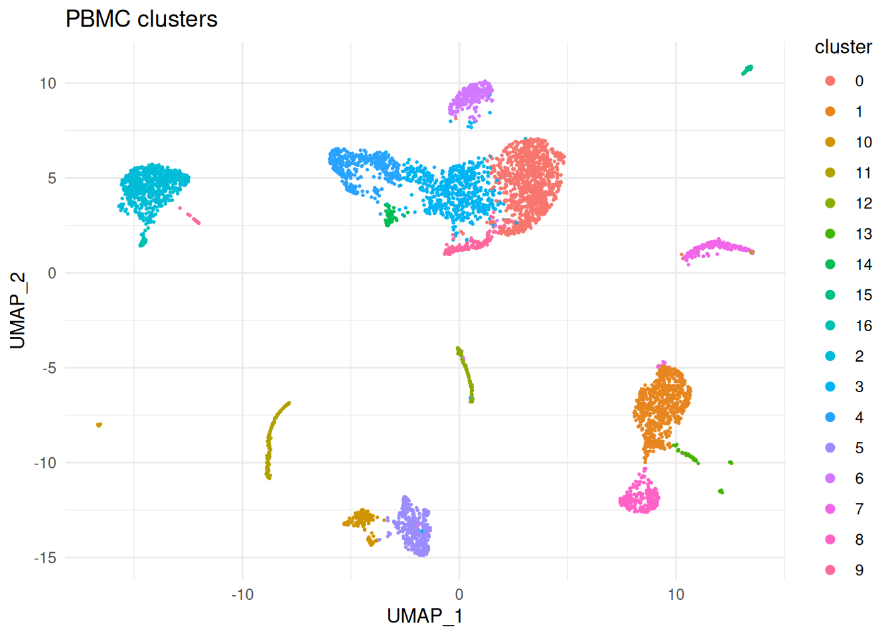
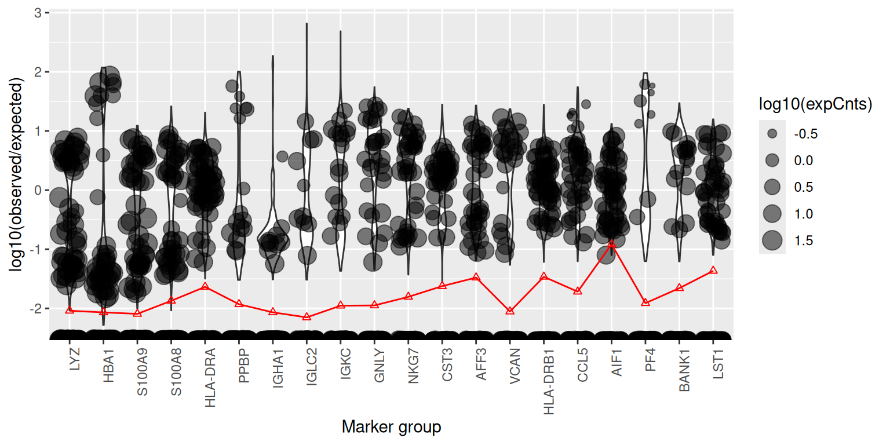
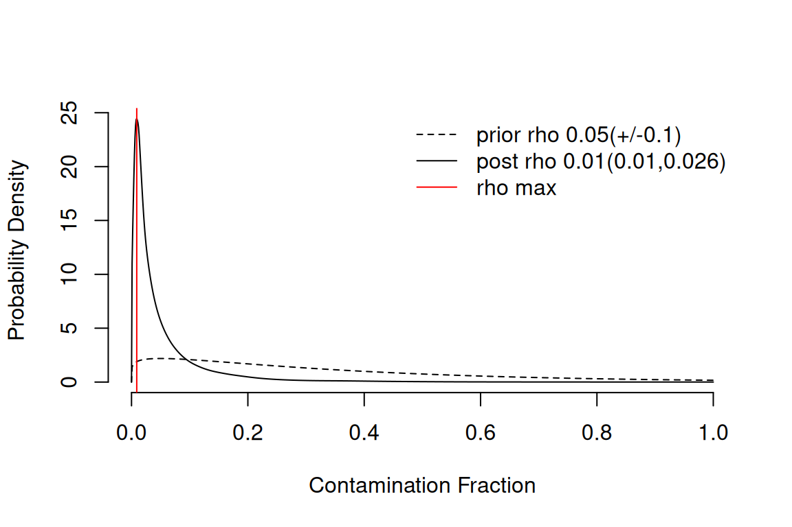
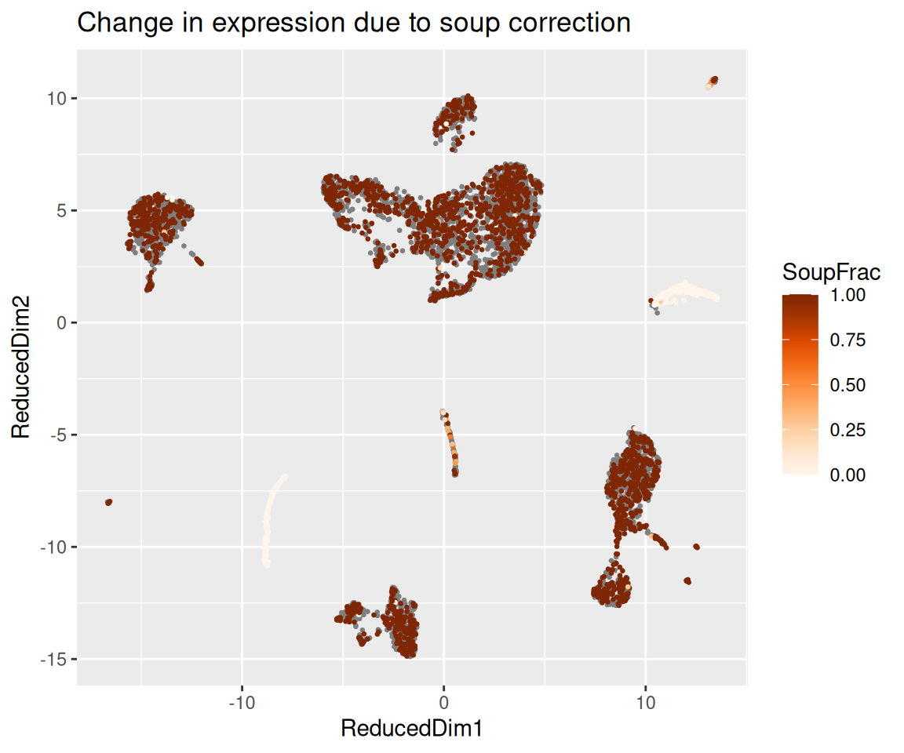
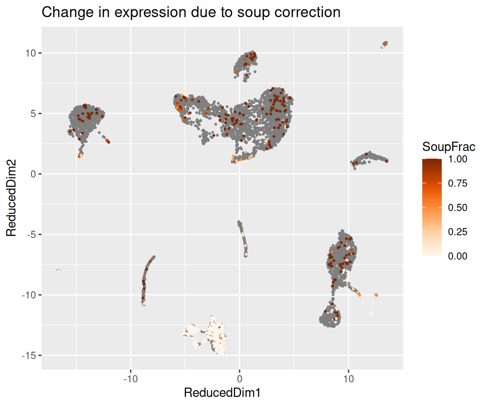

Last updated: 2026-04-27
Checks: 7 0
Knit directory: muse/
This reproducible R Markdown analysis was created with workflowr (version 1.7.2). The Checks tab describes the reproducibility checks that were applied when the results were created. The Past versions tab lists the development history.
Great! Since the R Markdown file has been committed to the Git repository, you know the exact version of the code that produced these results.
Great job! The global environment was empty. Objects defined in the global environment can affect the analysis in your R Markdown file in unknown ways. For reproduciblity it’s best to always run the code in an empty environment.
The command set.seed(20200712) was run prior to running
the code in the R Markdown file. Setting a seed ensures that any results
that rely on randomness, e.g. subsampling or permutations, are
reproducible.
Great job! Recording the operating system, R version, and package versions is critical for reproducibility.
Nice! There were no cached chunks for this analysis, so you can be confident that you successfully produced the results during this run.
Great job! Using relative paths to the files within your workflowr project makes it easier to run your code on other machines.
Great! You are using Git for version control. Tracking code development and connecting the code version to the results is critical for reproducibility.
The results in this page were generated with repository version d0991f7. See the Past versions tab to see a history of the changes made to the R Markdown and HTML files.
Note that you need to be careful to ensure that all relevant files for
the analysis have been committed to Git prior to generating the results
(you can use wflow_publish or
wflow_git_commit). workflowr only checks the R Markdown
file, but you know if there are other scripts or data files that it
depends on. Below is the status of the Git repository when the results
were generated:
Ignored files:
Ignored: .Rproj.user/
Ignored: data/1M_neurons_filtered_gene_bc_matrices_h5.h5
Ignored: data/293t/
Ignored: data/293t_3t3_filtered_gene_bc_matrices.tar.gz
Ignored: data/293t_filtered_gene_bc_matrices.tar.gz
Ignored: data/5k_Human_Donor1_PBMC_3p_gem-x_5k_Human_Donor1_PBMC_3p_gem-x_count_sample_filtered_feature_bc_matrix.h5
Ignored: data/5k_Human_Donor2_PBMC_3p_gem-x_5k_Human_Donor2_PBMC_3p_gem-x_count_sample_filtered_feature_bc_matrix.h5
Ignored: data/5k_Human_Donor3_PBMC_3p_gem-x_5k_Human_Donor3_PBMC_3p_gem-x_count_sample_filtered_feature_bc_matrix.h5
Ignored: data/5k_Human_Donor4_PBMC_3p_gem-x_5k_Human_Donor4_PBMC_3p_gem-x_count_sample_filtered_feature_bc_matrix.h5
Ignored: data/97516b79-8d08-46a6-b329-5d0a25b0be98.h5ad
Ignored: data/Parent_SC3v3_Human_Glioblastoma_filtered_feature_bc_matrix.tar.gz
Ignored: data/brain_counts/
Ignored: data/cl.obo
Ignored: data/cl.owl
Ignored: data/jurkat/
Ignored: data/jurkat:293t_50:50_filtered_gene_bc_matrices.tar.gz
Ignored: data/jurkat_293t/
Ignored: data/jurkat_filtered_gene_bc_matrices.tar.gz
Ignored: data/pbmc20k/
Ignored: data/pbmc20k_seurat/
Ignored: data/pbmc3k.csv
Ignored: data/pbmc3k.csv.gz
Ignored: data/pbmc3k.h5ad
Ignored: data/pbmc3k/
Ignored: data/pbmc3k_bpcells_mat/
Ignored: data/pbmc3k_export.mtx
Ignored: data/pbmc3k_matrix.mtx
Ignored: data/pbmc3k_seurat.rds
Ignored: data/pbmc4k_filtered_gene_bc_matrices.tar.gz
Ignored: data/pbmc_1k_v3_filtered_feature_bc_matrix.h5
Ignored: data/pbmc_1k_v3_raw_feature_bc_matrix.h5
Ignored: data/refdata-gex-GRCh38-2020-A.tar.gz
Ignored: data/seurat_1m_neuron.rds
Ignored: data/t_3k_filtered_gene_bc_matrices.tar.gz
Ignored: r_packages_4.5.2/
Untracked files:
Untracked: .claude/
Untracked: CLAUDE.md
Untracked: analysis/.claude/
Untracked: analysis/aucc.Rmd
Untracked: analysis/bimodal.Rmd
Untracked: analysis/bioc.Rmd
Untracked: analysis/bioc_scrnaseq.Rmd
Untracked: analysis/chick_weight.Rmd
Untracked: analysis/likelihood.Rmd
Untracked: analysis/modelling.Rmd
Untracked: analysis/sampleqc.Rmd
Untracked: analysis/wordpress_readability.Rmd
Untracked: bpcells_matrix/
Untracked: data/Caenorhabditis_elegans.WBcel235.113.gtf.gz
Untracked: data/GCF_043380555.1-RS_2024_12_gene_ontology.gaf.gz
Untracked: data/SC3pv3_GEX_Human_PBMC_filtered_feature_bc_matrix.h5
Untracked: data/SC3pv3_GEX_Human_PBMC_raw_feature_bc_matrix.h5
Untracked: data/SeuratObj.rds
Untracked: data/arab.rds
Untracked: data/astronomicalunit.csv
Untracked: data/davetang039sblog.WordPress.2026-02-12.xml
Untracked: data/femaleMiceWeights.csv
Untracked: data/lung_bcell.rds
Untracked: m3/
Untracked: women.json
Unstaged changes:
Modified: analysis/isoform_switch_analyzer.Rmd
Note that any generated files, e.g. HTML, png, CSS, etc., are not included in this status report because it is ok for generated content to have uncommitted changes.
These are the previous versions of the repository in which changes were
made to the R Markdown (analysis/soupx.Rmd) and HTML
(docs/soupx.html) files. If you’ve configured a remote Git
repository (see ?wflow_git_remote), click on the hyperlinks
in the table below to view the files as they were in that past version.
| File | Version | Author | Date | Message |
|---|---|---|---|---|
| Rmd | d0991f7 | Dave Tang | 2026-04-27 | SoupX |
In droplet-based single-cell RNA-seq experiments such as those produced by the 10x Genomics Chromium platform, every droplet that is sequenced contains some amount of cell-free mRNA floating in the input solution. These cell-free transcripts are released by cells that lysed prior to encapsulation and are then captured along with the mRNA from the live cell that the droplet is supposed to represent. The result is that the count matrix for any given cell is a mixture of two things: transcripts that genuinely originated in that cell, and a low-level background of transcripts that came from the ambient solution — the so-called “soup”.
The SoupX package (Young MD, Behjati S. SoupX removes ambient RNA contamination from droplet-based single-cell RNA sequencing data. GigaScience 9(12):giaa151, 2020) provides a method for estimating and removing this ambient RNA contamination. The intuition behind SoupX is that we can use empty droplets — droplets that did not contain a cell, but which still received some volume of the input solution — to characterise the soup directly. Once we know what the soup looks like, we can ask, for each real cell, what fraction of its observed counts are best explained by soup contamination and subtract that contribution out.
The SoupX workflow has three logical steps:
rho). For each cell, work out what fraction of
its counts came from the soup. rho = 0 means the cell has
no contamination; rho = 1 means every UMI came from the
soup. SoupX provides an automatic method (autoEstCont) and
a manual method (using genes that you know cannot be expressed in
particular cell types).The original SoupX
PBMC tutorial walks through this workflow on a small PBMC dataset
that ships with the package. The tutorial uses load10X()
against a Cell Ranger outs/ directory, which automatically
attaches Cell Ranger’s clustering and dimension reduction; the cluster
labels and UMAP coordinates needed by setClusters() and
setDR() are therefore already present.
This notebook reproduces the same workflow on a publicly available
10x Genomics PBMC dataset (SC3pv3_GEX_Human_PBMC,
distributed with Cell Ranger 7.0.1) using only the raw and filtered
feature-barcode matrices in HDF5 format. Because we don’t have a full
Cell Ranger outs/ directory, we cannot use
load10X() — we load the two matrices manually, build the
SoupChannel ourselves, and run a short Seurat pipeline to
produce the clustering and UMAP that the SoupX tutorial would otherwise
have inherited from Cell Ranger. The data files are tracked outside the
repository; download them with script/download.sh before
knitting this notebook.
We need three packages: SoupX itself, Seurat for loading the 10x HDF5
files and doing a quick clustering pass (SoupX strongly recommends
supplying clustering information), and ggplot2 for visualisations. We
also load future so that Seurat’s parallel-aware functions
(such as ScaleData, FindMarkers, and
JackStraw) can run on multiple workers, and
RhpcBLASctl so we can give the BLAS-bound steps
(RunPCA, distance computations, etc.) the same number of
threads.
suppressPackageStartupMessages({
library(SoupX)
library(Seurat)
library(ggplot2)
library(Matrix)
library(future)
library(RhpcBLASctl)
library(hdf5r)
})We will use four threads anywhere in this notebook that supports
parallel execution. Seurat picks up parallelism from the active
future plan, so a single
plan(multisession, workers = 4) is enough to opt every
future-aware Seurat function into using four background R
sessions. A handful of Seurat / uwot / igraph functions read their
thread count from a function argument or from the BLAS thread pool
instead of from future; we set those explicitly when we get
to them. SoupX itself does not support parallelism —
autoEstCont() and adjustCounts() are
single-threaded — so those steps are unaffected.
plan(multisession, workers = 4)
options(future.globals.maxSize = 2 * 1024^3)
RhpcBLASctl::blas_set_num_threads(4)
RhpcBLASctl::omp_set_num_threads(4)SoupX needs two count matrices to characterise the soup:
toc) — the
filtered matrix containing only droplets that Cell Ranger has classified
as cells. This is what we will eventually correct.tod) — the raw
matrix containing every barcode that received any UMI at all, including
the empty droplets. SoupX uses the empty droplets in this matrix to
estimate the soup profile.For 10x Cell Ranger output the convenience function
SoupX::load10X() will read both matrices from a Cell Ranger
outs/ directory and additionally pull in any clustering and
dimension-reduction information that Cell Ranger produced. We do not
have access to a full outs/ directory here — only the two
HDF5 files — so we will load the matrices manually with
Seurat::Read10X_h5() and assemble the
SoupChannel ourselves.
tod <- Seurat::Read10X_h5("data/SC3pv3_GEX_Human_PBMC_raw_feature_bc_matrix.h5")
toc <- Seurat::Read10X_h5("data/SC3pv3_GEX_Human_PBMC_filtered_feature_bc_matrix.h5")
dim(tod)[1] 36601 909706dim(toc)[1] 36601 5140The raw matrix has the same number of rows (genes) as the filtered matrix but many more columns (barcodes) because it includes all the empty droplets.
A SoupChannel is the central data structure in SoupX: it
is a list-like object that holds the filtered count matrix, the soup
profile, and any clustering or dimension-reduction information you
provide. It represents a single 10x channel — for multi-sample
experiments you would build one SoupChannel per sample.
When you call SoupChannel(tod, toc), the soup profile is
calculated automatically by summing counts across the empty droplets in
tod, and the raw droplet table is then dropped from memory.
If you want to inspect the soup profile yourself or assemble it
differently, you can pass calcSoupProfile = FALSE and call
estimateSoup() manually later.
sc <- SoupChannel(tod, toc)
scChannel with 36601 genes and 5140 cellsThe printout tells us how many genes and how many cells the channel covers. Note that “cells” here means every barcode in the filtered matrix — SoupX trusts Cell Ranger’s cell calls.
It is technically possible to run SoupX without clustering information, but the SoupX vignette is emphatic that you will get far better results with clustering than without:
While it is possible to run SoupX without clustering information, you will get far better results if some basic clustering is provided. Therefore, it is strongly recommended that you provide some clustering information to SoupX.
The reason is that the automatic contamination estimation works by looking for genes that are highly expressed in the soup but are clearly absent from particular cell populations. To do that, SoupX needs to know which cells belong to which population. SoupX is not sensitive to the exact clustering used — the default Seurat clustering is fine — so we will run a standard Seurat pipeline at low resolution to get cluster labels and a UMAP embedding to visualise things.
ScaleData is future-aware and will fan out
across the four workers we configured above; RunPCA is
dominated by BLAS calls and benefits from the four BLAS threads;
RunUMAP uses uwot under the hood and
exposes a n.threads argument that we set explicitly to 4.
The remaining Seurat steps (NormalizeData,
FindVariableFeatures, FindNeighbors,
FindClusters) are either fast or single-threaded and are
unaffected by the parallel configuration.
srat <- CreateSeuratObject(counts = toc)
srat <- NormalizeData(srat, verbose = FALSE)
srat <- FindVariableFeatures(srat, verbose = FALSE)
srat <- ScaleData(srat, verbose = FALSE)
srat <- RunPCA(srat, verbose = FALSE)
srat <- FindNeighbors(srat, dims = 1:30, verbose = FALSE)
srat <- FindClusters(srat, resolution = 0.5, verbose = FALSE)
srat <- RunUMAP(srat, dims = 1:30, n.threads = 4, verbose = FALSE)Attach the cluster assignments and the UMAP coordinates to the
SoupChannel. setClusters() expects a named
vector mapping cell barcode to cluster label; setDR()
expects a two-column data frame whose row names match the cell
barcodes.
sc <- setClusters(sc, setNames(Idents(srat), colnames(srat)))
sc <- setDR(sc, Embeddings(srat, "umap")[colnames(sc$toc), ])A quick sanity-check plot of the clustering. SoupX does not need this plot for any computation, but it is useful for orienting yourself before looking at the soup-related diagnostics.
dr_cols <- sc$DR
dd <- data.frame(
UMAP_1 = sc$metaData[[dr_cols[1]]],
UMAP_2 = sc$metaData[[dr_cols[2]]],
cluster = factor(sc$metaData$clusters)
)
ggplot(dd, aes(UMAP_1, UMAP_2, colour = cluster)) +
geom_point(size = 0.3) +
guides(colour = guide_legend(override.aes = list(size = 2))) +
ggtitle("PBMC clusters") +
theme_minimal()
Before estimating contamination fractions, it is informative to look at the soup profile directly. The soup profile is a probability distribution over genes telling us what the ambient solution looks like; a handful of genes typically dominate.
head(sc$soupProfile[order(sc$soupProfile$est, decreasing = TRUE), ], 20) est counts
MALAT1 0.019785911 74279
MT-CO3 0.009969804 37428
MT-ATP6 0.009608070 36070
HBB 0.008606241 32309
MT-ND2 0.008298847 31155
B2M 0.008267681 31038
MT-CO2 0.007856934 29496
TMSB4X 0.007500261 28157
MT-CO1 0.006506957 24428
RPL13 0.006456079 24237
RPL41 0.006356456 23863
EEF1A1 0.005983800 22464
RPLP1 0.005975543 22433
MT-ND3 0.005815453 21832
RPS12 0.005810924 21815
MT-ND1 0.005553342 20848
RPL10 0.005373274 20172
RPS27 0.005251541 19715
MT-ND4 0.005228900 19630
TPT1 0.005145791 19318The genes at the top of this list are highly expressed in the soup,
which usually means they are highly expressed in some abundant cell
population whose mRNA leaked into the supernatant. In PBMC data you
would typically expect to see haemoglobin genes (HBB,
HBA1, HBA2) — released by lysed red blood
cells contaminating the prep — and immunoglobulin genes
(IGKC, IGLC*, IGHA*) — released
by lysed plasma cells. These are exactly the genes whose expression in
non-erythroid, non-plasma-cell clusters is most clearly contamination,
which makes them ideal markers for inspecting the correction.
You can also visualise where the counts of a soup-implicated gene fall on the UMAP. A gene that is purely soup-derived will appear weakly and uniformly across all clusters; a gene with genuine cell-type-specific expression on top of soup contamination will be strong in its cell type and weak elsewhere.
plotMarkerDistribution(sc)No gene lists provided, attempting to find and plot cluster marker genes.Found 1549 marker genesIgnoring unknown labels:
• colour : "expressed by cell"Warning: Removed 79892 rows containing non-finite outside the scale range
(`stat_ydensity()`).Warning: No shared levels found between `names(values)` of the manual scale and the
data's colour values.
For each candidate gene, plotMarkerDistribution() shows
the per-cell expression alongside a horizontal line indicating the level
the soup alone would predict; genes that sit far above that line in some
cells and at it in others are good candidates for either bimodal
“expressed vs soup-only” classification (used by
autoEstCont) or manual contamination estimation via
estimateNonExpressingCells().
From SoupX 1.3.0 onwards, the recommended approach is to let
autoEstCont() estimate the contamination fraction
automatically. The function looks for sets of genes whose expression
pattern across clusters is consistent with them being soup-only in some
clusters, and uses those clusters to back out a contamination fraction
rho for every cell.
sc <- autoEstCont(sc)1549 genes passed tf-idf cut-off and 358 soup quantile filter. Taking the top 100.Using 1130 independent estimates of rho.Estimated global rho of 0.01
The diagnostic plot shows the distribution of estimated contamination
fractions and the genes that the algorithm used. A typical PBMC dataset
has a global rho around 0.05–0.10 (i.e. 5–10% of UMIs are
soup), but values vary substantially between datasets and even between
cells within a dataset. If autoEstCont() warns you that the
contamination fraction is unusually high or that few marker genes were
found, fall back to manual estimation with
estimateNonExpressingCells() and
calculateContaminationFraction() using genes that you know
should not be expressed in particular cell types — see the SoupX
vignette for the manual workflow.
With rho estimated for every cell,
adjustCounts() produces the corrected count matrix by
subtracting the expected soup contribution from every cell. Counts are
removed preferentially from genes that look most soup-like, in a way
that respects the discrete-counting nature of the data.
out <- adjustCounts(sc)Warning in sparseMatrix(i = out@i[w] + 1, j = out@j[w] + 1, x = out@x[w], :
'giveCsparse' is deprecated; setting repr="T" for youExpanding counts from 17 clusters to 5140 cells.By default adjustCounts() returns non-integer counts.
Most downstream tools — including Seurat — accept these without
complaint, but if you have a pipeline that requires strictly integer
counts you can pass roundToInt = TRUE (or wrap the call in
round()).
out <- adjustCounts(sc, roundToInt = TRUE)Two genes are particularly useful for sanity-checking the result on PBMC data:
HBB, HBA1,
HBA2) — released by lysed red blood cells. They
should appear in the soup but should be essentially absent from every
cluster after correction, because no PBMC type genuinely expresses
them.IGKC (immunoglobulin kappa constant) —
released by lysed plasma cells. It should be strongly expressed in the
B-cell / plasma-cell cluster and largely removed from every other
cluster.The function plotChangeMap() overlays, on the dimension
reduction we attached with setDR(), the fraction of
observed counts that SoupX attributed to soup for a given gene in each
cell — that is, (observed - corrected) / observed, the
default dataType = "soupFrac". A gene that was almost
entirely soup will show a high soup fraction across the whole map; a
gene with real cell-type-specific expression will show a high soup
fraction in the clusters where it should not be expressed and a low soup
fraction in the cluster where it genuinely is.
plotChangeMap(sc, out, "HBB")
plotChangeMap(sc, out, "IGKC")
We can also tabulate the global before/after counts for these genes, summed across all cells, to see at a glance how much SoupX removed.
genes <- intersect(c("HBB", "HBA1", "HBA2", "IGKC", "IGLC2", "IGHA1"), rownames(toc))
data.frame(
gene = genes,
before = rowSums(toc[genes, ]),
after = rowSums(out[genes, ]),
removed = rowSums(toc[genes, ]) - rowSums(out[genes, ])
) gene before after removed
HBB HBB 1502534 1498400.20 4133.8033
HBA1 HBA1 485458 484237.89 1220.1090
HBA2 HBA2 832936 830730.69 2205.3074
IGKC IGKC 32306 32027.55 278.4536
IGLC2 IGLC2 47710 47457.04 252.9564
IGHA1 IGHA1 18852 18554.36 297.6439The corrected matrix out can be used as a drop-in
replacement for the original counts in any downstream workflow. For
example, to feed it back into Seurat:
srat_clean <- CreateSeuratObject(counts = out)
srat_cleanAn object of class Seurat
36601 features across 5140 samples within 1 assay
Active assay: RNA (36601 features, 0 variable features)
1 layer present: countsYou would then re-run normalisation, feature selection, dimension reduction, and clustering on the cleaned matrix. In most PBMC datasets the broad cluster structure is unchanged, but contamination-driven artefacts — for example, clusters that appeared to express haemoglobin or immunoglobulin genes purely because of soup — disappear, and downstream differential expression becomes substantially cleaner.
Reset the future plan so the background R sessions are
released.
plan(sequential)sessionInfo()R version 4.5.2 (2025-10-31)
Platform: x86_64-pc-linux-gnu
Running under: Ubuntu 24.04.4 LTS
Matrix products: default
BLAS: /usr/lib/x86_64-linux-gnu/openblas-pthread/libblas.so.3
LAPACK: /usr/lib/x86_64-linux-gnu/openblas-pthread/libopenblasp-r0.3.26.so; LAPACK version 3.12.0
locale:
[1] LC_CTYPE=en_US.UTF-8 LC_NUMERIC=C
[3] LC_TIME=en_US.UTF-8 LC_COLLATE=en_US.UTF-8
[5] LC_MONETARY=en_US.UTF-8 LC_MESSAGES=en_US.UTF-8
[7] LC_PAPER=en_US.UTF-8 LC_NAME=C
[9] LC_ADDRESS=C LC_TELEPHONE=C
[11] LC_MEASUREMENT=en_US.UTF-8 LC_IDENTIFICATION=C
time zone: Etc/UTC
tzcode source: system (glibc)
attached base packages:
[1] stats graphics grDevices utils datasets methods base
other attached packages:
[1] hdf5r_1.3.12 RhpcBLASctl_0.23-42 future_1.69.0
[4] Matrix_1.7-4 ggplot2_4.0.2 Seurat_5.4.0
[7] SeuratObject_5.3.0 sp_2.2-1 SoupX_1.6.2
[10] workflowr_1.7.2
loaded via a namespace (and not attached):
[1] RColorBrewer_1.1-3 rstudioapi_0.18.0 jsonlite_2.0.0
[4] magrittr_2.0.4 spatstat.utils_3.2-2 farver_2.1.2
[7] rmarkdown_2.30 fs_1.6.6 vctrs_0.7.1
[10] ROCR_1.0-12 spatstat.explore_3.8-0 htmltools_0.5.9
[13] sass_0.4.10 sctransform_0.4.3 parallelly_1.46.1
[16] KernSmooth_2.23-26 bslib_0.10.0 htmlwidgets_1.6.4
[19] ica_1.0-3 plyr_1.8.9 plotly_4.12.0
[22] zoo_1.8-15 cachem_1.1.0 whisker_0.4.1
[25] igraph_2.2.2 mime_0.13 lifecycle_1.0.5
[28] pkgconfig_2.0.3 R6_2.6.1 fastmap_1.2.0
[31] fitdistrplus_1.2-6 shiny_1.13.0 digest_0.6.39
[34] patchwork_1.3.2 ps_1.9.1 rprojroot_2.1.1
[37] tensor_1.5.1 RSpectra_0.16-2 irlba_2.3.7
[40] labeling_0.4.3 progressr_0.18.0 spatstat.sparse_3.1-0
[43] httr_1.4.8 polyclip_1.10-7 abind_1.4-8
[46] compiler_4.5.2 bit64_4.6.0-1 withr_3.0.2
[49] S7_0.2.1 fastDummies_1.7.5 MASS_7.3-65
[52] tools_4.5.2 lmtest_0.9-40 otel_0.2.0
[55] httpuv_1.6.16 future.apply_1.20.1 goftest_1.2-3
[58] glue_1.8.0 callr_3.7.6 nlme_3.1-168
[61] promises_1.5.0 grid_4.5.2 Rtsne_0.17
[64] getPass_0.2-4 cluster_2.1.8.1 reshape2_1.4.5
[67] generics_0.1.4 gtable_0.3.6 spatstat.data_3.1-9
[70] tidyr_1.3.2 data.table_1.18.2.1 spatstat.geom_3.7-3
[73] RcppAnnoy_0.0.23 ggrepel_0.9.8 RANN_2.6.2
[76] pillar_1.11.1 stringr_1.6.0 spam_2.11-3
[79] RcppHNSW_0.6.0 later_1.4.6 splines_4.5.2
[82] dplyr_1.2.0 lattice_0.22-7 bit_4.6.0
[85] survival_3.8-3 deldir_2.0-4 tidyselect_1.2.1
[88] miniUI_0.1.2 pbapply_1.7-4 knitr_1.51
[91] git2r_0.36.2 gridExtra_2.3 scattermore_1.2
[94] xfun_0.56 matrixStats_1.5.0 stringi_1.8.7
[97] lazyeval_0.2.2 yaml_2.3.12 evaluate_1.0.5
[100] codetools_0.2-20 tibble_3.3.1 cli_3.6.5
[103] uwot_0.2.4 xtable_1.8-8 reticulate_1.45.0
[106] processx_3.8.6 jquerylib_0.1.4 Rcpp_1.1.1
[109] globals_0.19.0 spatstat.random_3.4-5 png_0.1-9
[112] spatstat.univar_3.1-7 parallel_4.5.2 dotCall64_1.2
[115] listenv_0.10.0 viridisLite_0.4.3 scales_1.4.0
[118] ggridges_0.5.7 purrr_1.2.1 rlang_1.1.7
[121] cowplot_1.2.0
sessionInfo()R version 4.5.2 (2025-10-31)
Platform: x86_64-pc-linux-gnu
Running under: Ubuntu 24.04.4 LTS
Matrix products: default
BLAS: /usr/lib/x86_64-linux-gnu/openblas-pthread/libblas.so.3
LAPACK: /usr/lib/x86_64-linux-gnu/openblas-pthread/libopenblasp-r0.3.26.so; LAPACK version 3.12.0
locale:
[1] LC_CTYPE=en_US.UTF-8 LC_NUMERIC=C
[3] LC_TIME=en_US.UTF-8 LC_COLLATE=en_US.UTF-8
[5] LC_MONETARY=en_US.UTF-8 LC_MESSAGES=en_US.UTF-8
[7] LC_PAPER=en_US.UTF-8 LC_NAME=C
[9] LC_ADDRESS=C LC_TELEPHONE=C
[11] LC_MEASUREMENT=en_US.UTF-8 LC_IDENTIFICATION=C
time zone: Etc/UTC
tzcode source: system (glibc)
attached base packages:
[1] stats graphics grDevices utils datasets methods base
other attached packages:
[1] hdf5r_1.3.12 RhpcBLASctl_0.23-42 future_1.69.0
[4] Matrix_1.7-4 ggplot2_4.0.2 Seurat_5.4.0
[7] SeuratObject_5.3.0 sp_2.2-1 SoupX_1.6.2
[10] workflowr_1.7.2
loaded via a namespace (and not attached):
[1] RColorBrewer_1.1-3 rstudioapi_0.18.0 jsonlite_2.0.0
[4] magrittr_2.0.4 spatstat.utils_3.2-2 farver_2.1.2
[7] rmarkdown_2.30 fs_1.6.6 vctrs_0.7.1
[10] ROCR_1.0-12 spatstat.explore_3.8-0 htmltools_0.5.9
[13] sass_0.4.10 sctransform_0.4.3 parallelly_1.46.1
[16] KernSmooth_2.23-26 bslib_0.10.0 htmlwidgets_1.6.4
[19] ica_1.0-3 plyr_1.8.9 plotly_4.12.0
[22] zoo_1.8-15 cachem_1.1.0 whisker_0.4.1
[25] igraph_2.2.2 mime_0.13 lifecycle_1.0.5
[28] pkgconfig_2.0.3 R6_2.6.1 fastmap_1.2.0
[31] fitdistrplus_1.2-6 shiny_1.13.0 digest_0.6.39
[34] patchwork_1.3.2 ps_1.9.1 rprojroot_2.1.1
[37] tensor_1.5.1 RSpectra_0.16-2 irlba_2.3.7
[40] labeling_0.4.3 progressr_0.18.0 spatstat.sparse_3.1-0
[43] httr_1.4.8 polyclip_1.10-7 abind_1.4-8
[46] compiler_4.5.2 bit64_4.6.0-1 withr_3.0.2
[49] S7_0.2.1 fastDummies_1.7.5 MASS_7.3-65
[52] tools_4.5.2 lmtest_0.9-40 otel_0.2.0
[55] httpuv_1.6.16 future.apply_1.20.1 goftest_1.2-3
[58] glue_1.8.0 callr_3.7.6 nlme_3.1-168
[61] promises_1.5.0 grid_4.5.2 Rtsne_0.17
[64] getPass_0.2-4 cluster_2.1.8.1 reshape2_1.4.5
[67] generics_0.1.4 gtable_0.3.6 spatstat.data_3.1-9
[70] tidyr_1.3.2 data.table_1.18.2.1 spatstat.geom_3.7-3
[73] RcppAnnoy_0.0.23 ggrepel_0.9.8 RANN_2.6.2
[76] pillar_1.11.1 stringr_1.6.0 spam_2.11-3
[79] RcppHNSW_0.6.0 later_1.4.6 splines_4.5.2
[82] dplyr_1.2.0 lattice_0.22-7 bit_4.6.0
[85] survival_3.8-3 deldir_2.0-4 tidyselect_1.2.1
[88] miniUI_0.1.2 pbapply_1.7-4 knitr_1.51
[91] git2r_0.36.2 gridExtra_2.3 scattermore_1.2
[94] xfun_0.56 matrixStats_1.5.0 stringi_1.8.7
[97] lazyeval_0.2.2 yaml_2.3.12 evaluate_1.0.5
[100] codetools_0.2-20 tibble_3.3.1 cli_3.6.5
[103] uwot_0.2.4 xtable_1.8-8 reticulate_1.45.0
[106] processx_3.8.6 jquerylib_0.1.4 Rcpp_1.1.1
[109] globals_0.19.0 spatstat.random_3.4-5 png_0.1-9
[112] spatstat.univar_3.1-7 parallel_4.5.2 dotCall64_1.2
[115] listenv_0.10.0 viridisLite_0.4.3 scales_1.4.0
[118] ggridges_0.5.7 purrr_1.2.1 rlang_1.1.7
[121] cowplot_1.2.0